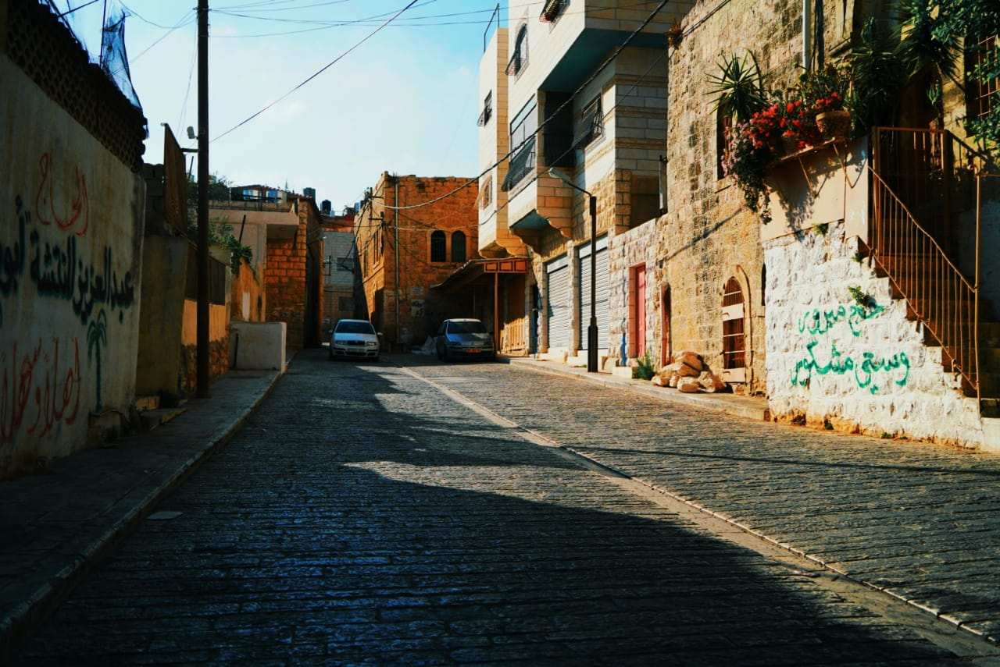

Esta página es una traducción del original alemán (versión del 15 de noviembre de 2026). Los enlaces llevan a páginas en alemán, salvo que se indique lo contrario.
Cisjordania bajo tres dominaciones
Cisjordania (en árabe ad-Daffa al-Gharbiyya, en inglés West Bank) abarca unos 5.655 km² al oeste del río Jordán, incluida Jerusalén Este. Hoy viven allí unos 3,3 millones de palestinos y —de forma controvertida desde el punto de vista del derecho internacional— más de 700.000 colonos israelíes. El territorio está bajo ocupación israelí desde junio de 1967; en julio de 2024, la Corte Internacional de Justicia (CIJ) calificó esta presencia continuada de contraria al derecho internacional.
Esta página recorre seis capítulos: primero la historia del territorio desde 1948, después el sistema de dominación —dos ordenamientos jurídicos, asentamientos, las tres zonas de Oslo—, luego la vida cotidiana bajo este orden, las operaciones militares con sus cifras de víctimas, las consecuencias económicas y sociales y, por último, las personas que han investigado y documentado todo ello.
Cisjordania no está aislada como la Franja de Gaza, sino entrecortada: entre las ciudades palestinas hay asentamientos, carreteras de circunvalación, zonas restringidas y puestos de control. Quien viaja de Ramala a Nablus sale y entra varias veces en zonas jurídicas distintas. En Gaza el muro está por fuera; aquí lo atraviesa por el medio.
Ambos territorios tienen esto en común: los dos se consideran ocupados según el derecho internacional, ambos están bajo el control del mismo ejército (en Cisjordania directamente mediante una administración militar, en Gaza desde fuera desde 2005 y mediante la guerra desde 2023) y en ambos rige para un grupo de población un derecho distinto que para el otro.
Del periodo jordano a la ocupación
Dos ordenamientos jurídicos, asentamientos, tres zonas
1995Las zonas de Oslo A, B y C
El Acuerdo Interino de Oslo II (1995) dividió Cisjordania (sin Jerusalén Este) en tres zonas:
Zona A (~18 %): administración civil y de seguridad palestina (las ciudades); aun así, las redadas del ejército israelí son habituales.
Zona B (~22 %): administración civil palestina, control de seguridad israelí.
Zona C (~60 %): control israelí total sobre seguridad, planificación y construcción; allí se encuentran todos los asentamientos, la mayor parte de los recursos y las reservas de tierra.
Concebida como régimen transitorio para cinco años, esta división sigue vigente hoy. En la práctica, la Zona C significa que casi nunca se conceden permisos de construcción a palestinos: de 2.550 solicitudes en 2016-2021, según OCHA solo se aprobaron 24 (menos del 1 %). Las casas, establos, cisternas e incluso escuelas financiadas por donantes construidos sin permiso son demolidos: en 2024, según OCHA, las autoridades israelíes destruyeron 1.768 estructuras palestinas en Cisjordania, incluida Jerusalén Este (cifra máxima), y de enero a septiembre de 2025 otras 1.384; las demoliciones de 2025 dejaron sin hogar a más de 1.400 personas.

Agua, puestos de control, Jerusalén Este
DetenciónLas detenciones: el instrumento que conoce cada familia
Ningún otro medio de la ocupación alcanza de forma directa a tantas personas. Según los datos de las organizaciones palestinas de presos, prácticamente cada familia palestina de Cisjordania se ha visto afectada a lo largo de las décadas: como detenidos, como familiares, como testigos de un registro domiciliario nocturno.
Tres aspectos son decisivos desde el punto de vista jurídico:
- La detención administrativa. Se basa en un reglamento británico de emergencia de 1945, se aplica por periodos de hasta seis meses y es prorrogable indefinidamente. Ni los detenidos ni sus abogados llegan a ver las pruebas. Aproximadamente la mitad de todos los presos palestinos está actualmente recluida sin cargos, en detención administrativa o como «combatientes ilegales».
- Los tribunales militares. Los palestinos de Cisjordania no son juzgados ante tribunales civiles, sino ante tribunales militares israelíes, en hebreo y con una tasa de condenas que la propia justicia militar cifró en el 99,7 por ciento. Los colonos israelíes del mismo territorio comparecen ante tribunales ordinarios.
- Niños a partir de doce años. Pueden ser llevados ante el tribunal militar. Los detalles (detenciones nocturnas, interrogatorios sin los padres, actas firmadas en hebreo) figuran en El derecho en la vida cotidiana.
Desde octubre de 2023, según las organizaciones palestinas de presos, el ejército israelí ha llevado a cabo más de 23.000 detenciones en Cisjordania y Jerusalén Este; la cifra incluye también a personas que fueron liberadas al poco tiempo. Las condiciones de detención (malos tratos, desnutrición, muertes bajo custodia) están documentadas en la página Detención, tortura y pena de muerte con los hallazgos de Physicians for Human Rights Israel y HaMoked.
Fuentes: Addameer, actualizaciones de cifras de abril y octubre de 2026 (a 5/10/2026) · HaMoked, estadísticas basadas en datos del Servicio Penitenciario de Israel · justicia militar israelí sobre la tasa de condenas (2010) · B'Tselem sobre la detención administrativa.
La piedra angularE1: el plan que parte Cisjordania
Entre todos los proyectos de construcción, uno tiene una importancia especial: E1, una zona de unos 12 kilómetros cuadrados entre Jerusalén Este y el asentamiento de Maale Adumim. Si se urbaniza, surgirá un cinturón continuo de asentamientos judíos desde las afueras de Jerusalén hasta el interior de Cisjordania.
E1 se encuentra en el punto más estrecho. Urbanizarla tendría tres consecuencias a la vez:
- Separa Jerusalén Este del resto de Cisjordania y, con ello, la futura capital de un Estado palestino del territorio de ese Estado.
- Parte Cisjordania en una mitad norte y una mitad sur; la conexión entre Ramala y Belén solo sería posible por carreteras de circunvalación.
- Afecta a los pastos de las comunidades beduinas de la región, entre ellas Jan al Ahmar, cuya demolición persiguen las autoridades israelíes desde hace años y cuya escuela se construyó con neumáticos y barro porque un permiso de construcción era imposible.
Precisamente por eso, E1 fue durante décadas una línea roja incluso para los gobiernos estadounidenses y se aplazó una y otra vez. Desde 2024/25 el gobierno impulsa abiertamente la planificación; el ministro competente declaró expresamente que el objetivo era hacer imposible un Estado palestino. Lo que el capítulo 3 describe como política de asentamientos encuentra aquí su piedra angular geográfica.
Situación en noviembre de 2026: Del plan de 3.401 viviendas ha surgido una primera licitación de 1.234 viviendas. La fiscal general aplazó la apertura de las ofertas hasta después de las elecciones a la Knéset; el 22 de octubre de 2026 el Tribunal Supremo desestimó los recursos del municipio de Ma'ale Adumim y del ministro Smotrich en su contra, y la apertura está prevista para el 19 de noviembre de 2026 (Peace Now, 26 de octubre de 2026). El 10 de noviembre, Peace Now, Bimkom e Ir Amim pidieron que las ofertas siguieran selladas hasta la formación de un nuevo gobierno (Peace Now, 11 de noviembre de 2026); hasta el 16 de noviembre de 2026 no se conocía ninguna respuesta. Por otra parte, el Ministerio de Vivienda y la Administración Civil publicaron tras las elecciones licitaciones para otras 823 viviendas en Gva'ot y Oranit (Peace Now, 9 de noviembre de 2026). → La anexión paso a paso (en alemán)
RecursosAgua
El recurso más importante, el acuífero de la Montaña, se encuentra en su mayor parte bajo Cisjordania. El reparto de Oslo II fijó una proporción de aproximadamente el 80 % (Israel) frente al 20 % (palestinos), que sigue vigente hoy; perforar y reparar pozos requiere autorización israelí, y la Autoridad Palestina del Agua debe además comprar agua a la empresa estatal israelí Mekorot. Según B'Tselem («Parched», 2023), el consumo medio de los palestinos de Cisjordania en 2022 fue de unos 86 litros por persona y día (por debajo del valor de referencia de la OMS de 100 litros), mientras que los israelíes (incluidos los colonos) consumen unos 300 litros. Amnistía Internacional documenta comunidades sin conexión a la red (sobre todo en la Zona C) con, en algunos casos, menos de 20 litros diarios, que deben comprar agua de camiones cisterna a un precio varias veces superior al de la red; el Banco Mundial ya había criticado en 2009 la práctica de reparto y de permisos como un obstáculo para el desarrollo.
MovimientoPuestos de control y libertad de circulación

AnexionadaJerusalén Este
Inmediatamente después de la guerra de junio, el 28 de junio de 1967, Israel extendió su derecho a unos 70 km² de territorio cisjordano: la Jerusalén Este jordana (aprox. 6,5 km²) más tierras de 28 aldeas palestinas. La «Ley de Jerusalén» (Ley Básica del 30 de julio de 1980) declaró la «Jerusalén unificada» capital; el Consejo de Seguridad de la ONU declaró esto «nulo y sin valor» («null and void») en la Resolución 478 (14 a 0, con la abstención de EE. UU.). Casi ningún Estado reconoce la anexión; desde diciembre de 2017, EE. UU. reconoce Jerusalén como capital de Israel, pero dejó expresamente abiertos los límites de la soberanía israelí en la ciudad.
Hebrón: todo el sistema en unas pocas manzanas
Quien quiera entender cómo funciona la ocupación en la práctica tiene que ir a Hebrón. Es la única ciudad palestina en cuyo centro hay asentamientos, y el único lugar donde todo un centro urbano ha sido cerrado a sus propios habitantes.
25 de febrero de 1994La masacre de la mezquita de Ibrahimi y lo que vino después
En la mañana del 25 de febrero de 1994, durante el Ramadán, el colono y médico Baruch Goldstein, de Kiryat Arba, entró en la mezquita de Ibrahimi de Hebrón —la Tumba de los Patriarcas, sagrada tanto para musulmanes como para judíos— y abrió fuego con un fusil de asalto contra los fieles. Murieron 29 personas y más de 100 resultaron heridas. Goldstein murió a golpes a manos de supervivientes. En los disturbios de los días siguientes, las fuerzas de seguridad israelíes mataron a más palestinos.
Tras una masacre cometida por un colono contra palestinos, no se impusieron restricciones a los colonos, sino al grupo de las víctimas. La mezquita de Ibrahimi fue dividida, se impusieron toques de queda sobre el centro palestino de la ciudad y la calle Shuhada —la principal calle comercial de Hebrón— fue cerrada progresivamente a los vehículos palestinos y, finalmente, en gran medida también a los peatones palestinos.
La Comisión Shamgar israelí investigó el atentado y calificó a Goldstein de autor solitario. Con los años, su tumba en Kiryat Arba se convirtió en un lugar de peregrinación con inscripción; solo en 1999 hizo retirar el Estado el santuario de mampostería: la tumba en sí y la veneración persisten. Cómo funciona el homenaje público a los autores de atentados se explica en detalle en Violencia de los colonos.

Los hallazgos«Ciudad fantasma», contada por una organización israelí
B'Tselem registró sistemáticamente en 2007 el estado del centro de la ciudad. El informe se titula «Ghost Town: Israel's Separation Policy and Forced Eviction of Palestinians from the Center of Hebron». Las cifras:
| Qué se contó | Cifra | Proporción |
|---|---|---|
| Viviendas palestinas abandonadas en la ciudad vieja | 1.014 | 41,9 % de las viviendas de la zona |
| Comercios y talleres cerrados | 1.829 | 76,6 % de todos los comercios de la zona |
| De ellos, cerrados por orden militar o abandonados a causa de los cierres | la inmensa mayoría | |
B'Tselem llama a este resultado una «transferencia silenciosa»: nadie fue expulsado mediante una resolución. Simplemente se hizo imposible vivir y trabajar allí hasta que la gente se marchó por sí misma.
Cómo se viveLo que significa en la práctica la «política de separación»
- Calles separadas. En tramos de la calle Shuhada los palestinos no pueden circular en vehículo, y en algunos ni siquiera caminar, mientras que los colonos israelíes usan libremente la misma calle. Algunos vecinos solo pueden llegar a sus casas por tejados y patios traseros, porque su puerta da a una calle cerrada y ha sido soldada.
- Redes sobre los callejones. Sobre el mercado de la ciudad vieja cuelgan mallas metálicas para atrapar la basura y las piedras que se arrojan desde las viviendas de colonos situadas encima. Se ven en todas las fotos de Hebrón, y son una prueba.
- Puestos de control en zona residencial. En H2 hay decenas de puestos de control, torniquetes y barreras dentro de la ciudad. Los escolares los atraviesan a diario de camino a clase.
- Dos ordenamientos jurídicos en una misma calle. Un colono y un palestino que viven puerta con puerta en Hebrón están sometidos a tribunales distintos, policías distintas y reglas de prueba distintas: son los dos ordenamientos jurídicos del capítulo 3, aquí a la vista.
Además de B'Tselem, trabajan allí el Hebron Rehabilitation Committee palestino (restauración y reocupación de casas vacías de la ciudad vieja), Youth Against Settlements, con un centro directamente en la calle Shuhada, la misión internacional de observación TIPH —a la que Israel expulsó del país en 2019 tras 22 años— y Breaking the Silence, que surgió expresamente del servicio en Hebrón: sus fundadores habían servido allí y en 2004 presentaron su primera exposición con fotos de esta ciudad.
Fuentes: B'Tselem, Ghost Town: Israel's Separation Policy and Forced Eviction of Palestinians from the Center of Hebron (mayo de 2007) y su documentación continua sobre Hebrón · Protocolo de Hebrón del 17 de enero de 1997 · Informe de la Comisión Shamgar (1994) · OCHA de la ONU sobre la situación en H2 · Breaking the Silence, testimonios de Hebrón.
23 de octubre – 2 de noviembre de 2026Diez días de cierre, en plena campaña electoral
En la mañana del 23 de octubre de 2026, dos hombres armados de Hebrón, Mohammad y Firas al-Ja'aba, mataron a tiros a dos soldados israelíes en un puesto de control a la salida norte de la ciudad: Ron Yonatan Roytman (23) y Yuval Shai Svilem (20). Otros soldados resultaron heridos y ambos atacantes murieron. Ese mismo día, el primer ministro Netanyahu ordenó cerrar Hebrón por completo y preparar un cierre de toda Cisjordania; la mezquita de Ibrahimi fue cerrada. Cuatro días después, Israel eligió un nuevo Parlamento.
Atentado, cierre, primeras demoliciones. Se cierran todos los accesos principales de la ciudad. En Farsh al-Hawa el ejército derriba un edificio residencial habitado de tres plantas, cinco construcciones comerciales y una cisterna. Al sur de Yatta cierra una barrera vial junto al asentamiento de Carmel; afecta al menos a 5.800 personas de las aldeas de Masafer Yatta (OCHA).
Desalojo por megafonía. Pasada la medianoche se ordena a los habitantes de Ein Deir Baha y al-Jalda que abandonen sus casas (petición de Adalah). El 23.10. Netanyahu había anunciado que se «destruirá» el lugar y se aplicará «el modelo exitoso y agresivo que usamos en los campamentos de refugiados» («the successful and aggressive model we used in the refugee camps», Times of Israel); en una entrevista con i24NEWS prometió a la Autoridad Palestina «una sorpresa muy grande» («a very big surprise», según AFP).
El jefe del Estado Mayor se opone, según un informe. Según un informe de la emisora Kan, el jefe del Estado Mayor, Eyal Zamir, dijo que no había justificación operativa ni jurídica para continuar la operación y mantener alejados a los habitantes; se habían registrado 500 edificios y encontrado dos fusiles. Aun así, Netanyahu habría ordenado continuar, poco antes de las elecciones. El informe no ha sido confirmado oficialmente.
La ONU. El alto comisionado de la ONU Volker Türk: «El castigo colectivo es una grave violación del derecho internacional» («Collective punishment is a grave violation of international law»). La amenaza de vaciar y borrar barrios enteros suscitaba «serias preocupaciones de limpieza étnica» («serious concerns of ethnic cleansing»; según AFP).
Día de elecciones. Para los palestinos de Cisjordania rige un cierre general. Los colonos de Hebrón y Kiryat Arba votan; los palestinos de la ciudad, no.
Demanda. La organización de derechos humanos Adalah presenta ante el Tribunal Supremo, en nombre del municipio de Hebrón y de siete habitantes, una petición contra los desalojos, las demoliciones y los cierres.
Retirada. En la noche del 1 al 2 de noviembre el ejército da por concluida la operación; las casas de los dos autores del atentado han sido demolidas. Ese mismo día el Estado comunica al tribunal que «ya no existe una necesidad de seguridad ni humanitaria» («no longer a security or humanitarian need», Jerusalem Post) que justifique impedir el regreso y solicita que la petición se archive por haber quedado sin objeto. El municipio contabiliza 491 familias con 3.189 personas que habían sido desplazadas, 15 casas y construcciones demolidas y 327 comercios cerrados.
La justificación: el 24 de octubre de 2026 el ejército anunció una operación «de varios días», «limitada a la zona desde la que operaron los terroristas»; la noche anterior, Netanyahu había ordenado el cierre tras una consulta de seguridad (Times of Israel, a través de la prensa; UN News).
Verificación: contradictoria El motivo es cierto: murieron dos soldados, y buscar a posibles cómplices es un objetivo legítimo. Pero los propios datos del ejército y del Estado no encajan con una operación que dura solo lo que exige la seguridad: cuatro armas encontradas tras diez días (Ynet, a través de la prensa); según un informe de la cadena Kan, el jefe del Estado Mayor ya no veía el 26 de octubre «ninguna justificación operativa» para mantener alejados a los habitantes (Times of Israel, sin confirmación oficial); y el 2 de noviembre el propio Estado declaró ante el tribunal que ya no había necesidad de seguridad (Jerusalem Post). Afectó a unas 3.000 personas desplazadas que no habían hecho nada. Castigar a personas no implicadas está prohibido por el art. 33 del IV Convenio de Ginebra; el Alto Comisionado de la ONU Türk calificó la operación de castigo colectivo (ACNUDH, 26/10/2026). Según la opinión consultiva de la CIJ del 19 de julio de 2024, la presencia de Israel en Cisjordania es ilegal en su conjunto (A/78/968).
Que la operación se prolongara a causa de las elecciones es una interpretación, basada en el informe de Kan y en el momento, pero no demostrada. Probado está lo siguiente: el propio ejército informó de cuatro armas encontradas tras diez días; el Estado declaró el mismo día de la retirada que ya no había necesidad de mantener alejados a los habitantes; y el primer ministro había anunciado antes que trasladaría a Hebrón el modelo de los campos de refugiados, los campos de los que desde enero de 2025 han sido desplazadas más de 34.000 personas (→ «Iron Wall»).
Masafer Yatta, el entorno rural. Ya en septiembre, la Administración Civil había llevado a cabo una oleada de demoliciones en la Zona de Tiro 918, al sur de Hebrón: Khirbet a-Taban fue demolida casi por completo y el 23.9. le siguió Jinba. Del 18 de agosto al 23 de septiembre perdieron allí su hogar 122 personas, entre ellas 62 niños (OCHA). El 28.10., unos colonos agredieron a golpes cerca de Umm al-Khair a dos periodistas y a una activista; los detenidos y acusados fueron los periodistas (Comité para la Protección de los Periodistas, CPJ; → Casos).
Fuentes sobre octubre/noviembre de 2026: OCHA, Humanitarian Situation Reports del 2.10. y del 29.10.2026 · UN News, 23.10. y 26.10.2026 (Türk) · Times of Israel, 24.10. y 26.10.2026 (informe de Kan) · Ynet, 2.11.2026 (balance del ejército) · Jerusalem Post, 2.11.2026 (petición de Adalah, respuesta del Estado) · Arab News, 2.11.2026 (cifras del municipio de Hebrón) · CPJ, 29.10.2026. Rige la presunción de inocencia para todas las personas mencionadas.
Operaciones militares y cifras de víctimas
2019–2023Operaciones militares y cifras de víctimas antes de octubre de 2023
desde octubre de 2023Operaciones militares y cifras de víctimas desde octubre de 2023
Ya antes del 7 de octubre de 2023 la situación se había agravado: a partir del 3 de julio de 2023, el ejército de Israel llevó a cabo una gran operación de unas 48 horas en el campamento de refugiados de Yenín —según sus propios datos, la mayor en Cisjordania desde 2002—, con ataques aéreos con drones, al menos doce muertos (13 según otras fuentes), más de 140 heridos y la destrucción de viviendas e infraestructuras, que paralizó temporalmente el suministro de electricidad y agua en el campamento.
Lo que la ocupación causa en lo económico y lo social
EconomíaLa economía bajo ocupación
El Protocolo de París (1994) vinculó la economía palestina a una unión aduanera con Israel: sin moneda propia, sin marco propio de comercio exterior, e Israel recauda los derechos de importación («clearance revenues», ingresos de liquidación) que debe transferir a la Autoridad Palestina; constituyen más del 60 % de sus ingresos. Israel ha retenido partes en repetidas ocasiones; el Banco Mundial cifra las deducciones acumuladas y los fondos retenidos de enero de 2019 a abril de 2025 en unos 1.760 millones de dólares (12,8 % del PIB de 2024); la UNCTAD llega a más de 3.670 millones de dólares para el periodo de enero de 2019 a marzo de 2026, y desde mayo de 2025 Israel no transfiere absolutamente nada.

Escuela y clínicaEducación y salud bajo ocupación
ConclusiónLo que todo esto supone en conjunto
En Cisjordania y Jerusalén Este se superponen desde 1967 la ocupación militar, la colonización civil mediante asentamientos y una anexión progresiva. La CIJ declaró ilegal en 2024 el conjunto de esta política y exigió la retirada de Israel; la Asamblea General de la ONU fijó en septiembre de 2024 un plazo de doce meses. En realidad, la expansión de los asentamientos, las demoliciones, la detención administrativa, las restricciones de movimiento y la violencia de colonos alcanzaron máximos históricos en los años 2024–2026, mientras miembros del Gobierno israelí exigen abiertamente la anexión formal al menos de la Zona C. La cuestión de si sobre esta base sigue siendo posible un Estado palestino viable es el núcleo del debate internacional sobre la solución de dos Estados.
Las personas que han investigado y documentado Cisjordania
Casi todas las cifras de esta página proceden de alguien que durante décadas ha contado, seguido expedientes, cartografiado pueblos o llevado procesos judiciales. Palestinas y palestinos, israelíes, investigadores internacionales. Estos nombres forman parte de ello; de lo contrario, una cifra no es más que una afirmación.
Raja Shehadeh Ramala
Jurista de Ramala, cofundador de Al-Haq (1979), la primera organización palestina de derechos humanos. Fue uno de los primeros en analizar jurídicamente las órdenes militares y mostró cómo el derecho administrativo se convierte en apropiación de tierras. Su libro Palestinian Walks (Premio Orwell 2008) describe la misma evolución a lo largo de caminatas por un paisaje que desaparece pedazo a pedazo.
Salman Abu Sitta
Ingeniero y cartógrafo, nacido en 1937 en el distrito de Beerseba. Su Atlas of Palestine registra los pueblos de 1948 con coordenadas, lindes y cifras de población: la base de toda discusión seria sobre la tierra y el retorno.
Walid Khalidi & Sharif Kanaana
Walid Khalidi presentó con All That Remains (1992) la documentación de los 418 pueblos despoblados, lugar por lugar, con lo que hoy se encuentra allí. Sharif Kanaana dirigió en la Universidad de Birzeit la serie de monografías de pueblos, para la que los estudiantes entrevistaron a supervivientes mientras aún vivían.
Dror Etkes Kerem Navot
Investigador israelí de la tierra. Desde hace años analiza fotografías aéreas y datos catastrales para mostrar qué superficies explotan realmente los asentamientos y puestos avanzados, a menudo varias veces más de lo que se les ha asignado oficialmente. Sus estudios sobre los puestos avanzados de pastoreo son la base de datos de casi todos los informes sobre este patrón.
Yesh Din & B'Tselem Israel
Yesh Din acompaña expedientes de investigación concretos desde la denuncia hasta el archivo; de ahí proceden las tasas de impunidad. B'Tselem mantiene las bases de datos, verificadas caso por caso, sobre muertos, detención administrativa y demoliciones. Ambas son israelíes y trabajan con cifras oficiales israelíes.
Amira Hass & Gideon Levy Haaretz
Dos periodistas israelíes que informan desde los territorios ocupados desde la década de 1990. Amira Hass vive desde hace décadas en Ramala; Gideon Levy lleva más de treinta años yendo a los pueblos con el fotógrafo Alex Levac y escribe la columna Twilight Zone, caso por caso, con nombres.
Nathan Thrall Pulitzer 2024
A Day in the Life of Abed Salama reconstruye un accidente de autobús escolar cerca de Jerusalén en el que murieron niños porque las vías de rescate, las competencias y los permisos dependen del orden de la ocupación. Un único día en el que todo el sistema se hace visible.
Jeff Halper ICAHD
Antropólogo israelí-estadounidense, cofundador del Israeli Committee Against House Demolitions. La organización contabiliza demoliciones de viviendas desde la década de 1990 y reconstruye casas destruidas como gesto de protesta.
Ben Ehrenreich
The Way to the Spring (2016): el autor vivió durante largos periodos en Nabi Saleh, Hebrón y Ramala y describe de cerca la vida cotidiana bajo la ocupación, sin justificarla con explicaciones.
Nur Masalha
Historiador palestino. Demostró la presencia de la idea del traslado en los archivos sionistas (Expulsion of the Palestinians, 1992) y más tarde presentó, con Palestine: A Four Thousand Year History, una historia general.
Los comités de los pueblos desde 2005
En Bil'in, Ni'lin, Nabi Saleh y Kafr Qaddum, comités locales documentan desde hace años cada manifestación, cada herida, cada detención, con sus propias cámaras. La demanda de Bil'in llevó en 2007 a que el Tribunal Supremo israelí ordenara modificar el trazado de un tramo del muro.
OCHA de la ONU Base de datos
La Oficina de la ONU para la Coordinación de Asuntos Humanitarios lleva los recuentos continuos de muertos, demoliciones, desplazamientos y restricciones de acceso: la base de comparación neutral con la que deben medirse todas las demás estadísticas.
Porque la réplica más frecuente a las cifras procedentes de los territorios ocupados es: ¿Quién lo dice? Aquí está la respuesta. Llama la atención cuántas de estas personas y organizaciones son israelíes: Yesh Din, B'Tselem, Kerem Navot, ICAHD, Hass, Levy. Trabajan con expedientes israelíes, litigan ante tribunales israelíes y publican en hebreo. La visión general completa con las bases de datos se encuentra en Organizaciones y bases de datos.
Cisjordania hoy y en la Antigüedad




Ocho preguntas sobre Cisjordania
Cisjordania es más difícil de abarcar que Gaza, porque aquí no hay un muro que la rodee por fuera, sino un sistema de zonas, permisos y carreteras que la atraviesa por dentro. Estas tarjetas lo resumen: primero responde tú mismo, luego despliégalas.
La diferencia ¿Qué distingue a Cisjordania de Gaza?
No está aislada, sino fragmentada desde dentro. Entre las ciudades palestinas hay asentamientos, carreteras de circunvalación, zonas restringidas y puestos de control. Quien viaja de Ramala a Nablus sale y entra varias veces en zonas jurídicas distintas.
En Gaza el muro está por fuera; aquí pasa por el medio.
Lo que tienen en común: ambos territorios se consideran ocupados según el derecho internacional, ambos están bajo el control del mismo ejército (en Cisjordania directamente mediante una administración militar, en Gaza desde fuera desde 2005 y mediante la guerra desde 2023), y en ambos rige para un grupo de población un derecho distinto que para el otro.
Para saber más: La diferencia con GazaLa magnitud ¿Cuántas personas viven allí, y cuántos colonos?
Oslo, 1995 ¿Qué significan las Zonas A, B y C?
- Zona A (~18 %): administración civil y de seguridad palestina: las ciudades. Aun así, el ejército israelí realiza redadas con regularidad.
- Zona B (~22 %): administración civil palestina, control de seguridad israelí.
- Zona C (~60 %): control israelí total sobre seguridad, planificación y construcción; allí se encuentran todos los asentamientos, la mayoría de los recursos y las reservas de tierra.
Se concibió como un régimen transitorio de cinco años. La división sigue vigente hasta hoy.
Para saber más: Dos ordenamientos jurídicos, asentamientos, tres zonasEl núcleo jurídico ¿Por qué se habla de dos ordenamientos jurídicos en el mismo territorio?
Porque en el mismo territorio rigen dos sistemas jurídicos para dos grupos de población:
Los palestinos están sometidos desde 1967 a la administración militar: más de 1.800 órdenes militares regulan casi todos los ámbitos de la vida, desde las normas de construcción hasta el derecho de reunión (Orden Militar 101) o las infracciones de tráfico. Se les juzga ante tribunales militares, y los procesos se desarrollan en hebreo; según datos de la propia justicia militar, la tasa de condenas fue del 99,7 % (2010).
Los colonos israelíes que viven en el mismo territorio, en cambio, están sometidos al derecho civil israelí, con tribunales ordinarios.
Para saber más: Dos sistemas jurídicosDetención ¿Cuántas personas están bajo custodia israelí?
7.846 «presos de seguridad» en el sistema penitenciario (HaMoked, a octubre de 2026; en agosto: 7.965), más 1.419 «combatientes ilegales»; la Sociedad de Presos Palestinos contabilizó en abril de 2026, incluidos los campamentos militares, más de 9.600, y Addameer, el 5/10/2026, unos 9.300; antes de octubre de 2023 eran unos 5.250; tomando el valor de abril, un aumento del 83 % (tomando el valor de octubre de Addameer, alrededor del 77 %).
- 3.101 de ellos en detención administrativa: sin cargos, sin juicio, sobre la base de pruebas secretas (HaMoked, octubre de 2026; agosto de 2026: 3.198).
- Unos 350 niños y adolescentes, la mayoría en las prisiones de Megiddo y Ofer.
Según estudios de organizaciones palestinas de presos, a lo largo de las décadas prácticamente todas las familias de Cisjordania se han visto afectadas: como detenidos, como familiares o como testigos de un registro domiciliario nocturno.
Para saber más: Las detenciones · DetenciónE1 ¿Por qué precisamente doce kilómetros cuadrados son tan controvertidos?
Porque E1 se encuentra en el punto más estrecho. Edificarlo tendría tres consecuencias a la vez:
- Separa Jerusalén Este del resto de Cisjordania y, con ello, la futura capital de un Estado palestino de su territorio.
- Parte Cisjordania en una mitad norte y otra sur; la conexión Ramala–Belén solo sería posible por carreteras de circunvalación.
- Afecta a los pastos de las comunidades beduinas, entre ellas Jan al-Ahmar, cuya escuela se construyó con neumáticos y barro porque un permiso de construcción era imposible.
Precisamente por eso, E1 fue durante décadas una línea roja incluso para los gobiernos estadounidenses. Desde 2024/25, el Gobierno israelí impulsa abiertamente la planificación.
Para saber más: Por qué precisamente estos doce kilómetros cuadradosHebrón ¿Por qué Hebrón representa todo el sistema?
Porque allí se ve en unas pocas calles lo que en otros lugares se reparte por todo un territorio: un asentamiento en medio de una ciudad palestina, calles separadas, barreras y puestos de control en la vida cotidiana, y la cuestión de quién puede moverse por dónde.
Allí lo documentan de forma permanente varias entidades, entre ellas organizaciones israelíes.
Para saber más: HebrónLa conexión ¿Qué tiene que ver la Segunda Intifada con la vida cotidiana actual?
Casi todo lo que marca hoy la vida cotidiana surgió entre 2000 y 2005: la barrera (inicio de la construcción en 2002), el régimen de permisos de la zona de costura, el sistema de puestos de control y la expansión de los asentamientos de esos mismos años.
El 9 de julio de 2004, la Corte Internacional de Justicia declaró contrario al derecho internacional el trazado de la barrera en territorio ocupado y exigió su desmantelamiento y una reparación.
Para saber más: Segunda Intifada · El derecho en la vida cotidianaFuentes de esta página
Situación a: 16 de noviembre de 2026 (cifras y novedades actuales revisadas; los capítulos históricos no se revisaron en esta ocasión).
Cisjordania y Jerusalén Este
- CIJ – Opinión consultiva del 19 de julio de 2024 sobre las políticas y prácticas de Israel en el territorio palestino ocupado
- Consejo de Seguridad de la ONU – Resolución 2334 (2016), texto completo
- OCHA – Movement and Access in the West Bank (abril de 2026)
- OCHA – The humanitarian impact of 20 years of the Barrier (2022)
- OCHA – Most Palestinian plans to build in Area C not approved
- OCHA – Sharp increase in ratification of declarations of “state land”
- ACNUDH/ONU – Israel's settlement expansion drives mass displacement in West Bank (marzo de 2026)
- Consejo de Derechos Humanos de la ONU – Michael Lynk, A/HRC/49/87: Israeli Apartheid (2022)
- B'Tselem – East Jerusalem (anexión, estatuto de residencia, expropiaciones)
- B'Tselem – Parched: Israel's policy of water deprivation in the West Bank (2023)
- B'Tselem – Under the Guise of Legality: Declarations of state land in the West Bank
- B'Tselem – Statistics on Settlements and Settler Population
- Peace Now – Settlements Data: Population
- UE/SEAE – Report on Israeli Settlements in the occupied West Bank including East Jerusalem (año de referencia 2025)
- HaMoked – Estadísticas sobre presos palestinos y detención administrativa (actualización continua)
- Banco Mundial – West Bank and Gaza: Economic Monitoring Reports
- Jerusalem Story – The Destruction of Jerusalem's Moroccan (Mughrabi) Quarter
- Avi Shlaim – Collusion Across the Jordan: King Abdullah, the Zionist Movement, and the Partition of Palestine (1988)
- B'Tselem – Conquer and Divide: 165 enclaves palestinos en las Zonas A/B
- B'Tselem – Masafer Yatta/Zona de tiro 918: desalojo forzoso de ocho aldeas
- PCBS/Autoridad Palestina del Agua – Estadística del Día Mundial del Agua 2025 (consumo per cápita)
- Secretario General de la ONU – Declaración sobre la aprobación del corredor de asentamientos E1 (20/8/2025)
- Banco Mundial – Area C and the Future of the Palestinian Economy (2014)
- Banco Mundial – Economic Update on the West Bank and Gaza (mayo de 2026)
- Human Rights Watch – West Bank: Israel Delaying Palestinian Ambulances Risks Lives (5/8/2026, cifras de la OMS)
- Human Rights Watch – «All My Dreams Have Been Erased»: el desplazamiento forzoso de Israel en Cisjordania (20/11/2025)
- ACNUDH – 1.001 muertos en Cisjordania desde el 7 de octubre de 2023 (comunicado de prensa, 17/10/2025)
- Peace Now – Decisión del Gabinete de reanudar el registro de tierras en la Zona C (2025/2026)
Créditos de las imágenes de esta página: Imagen de portada – Foto: Morjana Jalal – CC BY-SA 4.0, vía Wikimedia Commons · Fuente